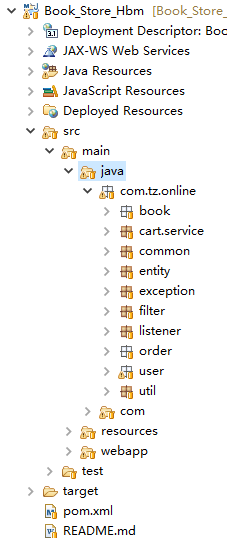
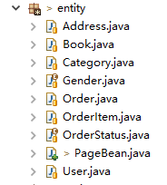
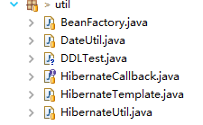

1.Day01
1.1.任务详细说明
通过需求文档以及项目经理的讲解，对整个项目有了详细的理解，开始对其项目进行开发：
1.1.1.创建项目按照MVC的架构模式创建相应的包结构如下图：
 com.tz.online:是项目的公共包，com.tz是域名的反写，online是项目名称
其下的子包中是项目的模块划分以及功能包:
book：商品模块（图书模块） cart：购物车模块 entity：实体包 order：订单模块 user：用户模块 filter：过滤器 util：工具包 test：测试包 exception：自定义异常 listener：监听器
resources：配置文件包,里面有一些配置文件：

bean.properties:此配置文件主要位bean工厂提供类的全限定名，通过名称 hibernate.cfg.xml：hibernate的主配置文件 ehcache.xml：hibernate二级缓存的配置 log4j.properties：日志的配置
WebRoot下的文件夹：
images：存放项目中的图片 js：存放项目中使用的脚本文件 jsp：存放项目中的JSP视图 style：存放项目中的样式文件
注1：整个项目采用JSP +Servlet + Javabean + Hibernate实现，工程创建出来以后设置项目的编码 ：UTF-8 注2：因为采用MAVEN进行项目管理和构建，请按maven进行设置相关的编译环境和依赖管理
1.1.2.pom.xml的依赖配置：
<properties>
<project.build.sourceEncoding>UTF-8</project.build.sourceEncoding>
<project.reporting.outputEncoding>UTF-8</project.reporting.outputEncoding>
<maven.compiler.source>1.8</maven.compiler.source>
<maven.compiler.target>1.8</maven.compiler.target>
<groovyVersion>2.4.7</groovyVersion>
<testngVersion>6.9.8</testngVersion>
</properties>
<dependencies>
<!--provided -->
<dependency>
<groupId>javax.servlet</groupId>
<artifactId>javax.servlet-api</artifactId>
<version>3.1.0</version>
<scope>provided</scope>
</dependency>
<dependency>
<groupId>javax.servlet.jsp</groupId>
<artifactId>jsp-api</artifactId>
<version>2.2</version>
<scope>provided</scope>
</dependency>
<!--runtime -->
<dependency>
<groupId>jstl</groupId>
<artifactId>jstl</artifactId>
<version>1.2</version>
<scope>runtime</scope>
</dependency>
<dependency>
<groupId>org.hibernate</groupId>
<artifactId>hibernate-core</artifactId>
<version>4.3.8.Final</version>
</dependency>
<dependency>
<groupId>log4j</groupId>
<artifactId>log4j</artifactId>
<version>1.2.17</version>
</dependency>
<dependency>
<groupId>org.slf4j</groupId>
<artifactId>slf4j-log4j12</artifactId>
<version>1.7.21</version>
</dependency>
<dependency>
<groupId>com.oracle</groupId>
<artifactId>ojdbc6</artifactId>
<version>11.2.0.3</version>
</dependency>
<dependency>
<groupId>c3p0</groupId>
<artifactId>c3p0</artifactId>
<version>0.9.1.2</version>
</dependency>
<dependency>
<groupId>net.sf.ehcache</groupId>
<artifactId>ehcache-core</artifactId>
<version>2.4.3</version>
</dependency>
<dependency>
<groupId>com.alibaba</groupId>
<artifactId>fastjson</artifactId>
<version>1.2.17</version>
</dependency>
<dependency>
<groupId>org.hibernate</groupId>
<artifactId>hibernate-c3p0</artifactId>
<version>4.3.8.Final</version>
</dependency>
<dependency>
<groupId>org.hibernate</groupId>
<artifactId>hibernate-ehcache</artifactId>
<version>4.3.8.Final</version>
</dependency>
<!--test -->
<dependency>
<groupId>junit</groupId>
<artifactId>junit</artifactId>
<version>4.12</version>
</dependency>
</dependencies>
<build>
<plugins>
<plugin>
<groupId>org.apache.tomcat.maven</groupId>
<artifactId>tomcat7-maven-plugin</artifactId>
<version>2.2</version>
<configuration>
<port>8888</port>
</configuration>
</plugin>
<plugin>
<groupId>org.apache.maven.plugins</groupId>
<artifactId>maven-dependency-plugin</artifactId>
<version>2.10</version>
</plugin>
</plugins>
</build>
1.1.3.配置hibernate的主配置文件:hibernate.cfg.xml
a、数据库连接以及连接池属性
<session-factory>
<!-- 设置Hibernate连接目标数据库的基本信息 -->
<property name="connection.driver_class">
oracle.jdbc.driver.OracleDriver
</property>
<property name="connection.url">
jdbc:oracle:thin:@localhost:1521:XE
</property>
<property name="connection.username">bookstore</property>
<property name="connection.password">bookstore</property>
<!-- 配置c3p0连接池 -->
<!-- 指定c3p0连接池的支持类 -->
<property name="hibernate.connection.provider_class">org.hibernate.c3p0.internal.C3P0ConnectionProvider</property>
<!-- 设置c3p0连接池,最大容量,最小容量,最大语句对象数,超时时间,检测间隔时间,增大的步长 -->
<property name="c3p0.max_size">10</property>
<property name="c3p0.min_size">2</property>
<property name="c3p0.max_statements">150</property>
<property name="c3p0.timeout">3000</property>
<property name="c3p0.idle_test_period">2000</property>
<property name="c3p0.acquire_increment">2</property>
b、二级缓存
<property name="cache.use_second_level_cache">true</property>
<!-- 指定二级缓存供应商 -->
<property name="hibernate.cache.region.factory_class">
org.hibernate.cache.ehcache.EhCacheRegionFactory
</property>
c、hibernate的数据库属性
<property name="dialect">
org.hibernate.dialect.Oracle10gDialect
</property>
<!-- 是否执行DDL语句 -->
<property name="hbm2ddl.auto">update</property>
<!-- 是否显示SQL语句 -->
<property name="show_sql">true</property>
<!-- 是否格式化SQL语句 -->
<property name="format_sql">true</property>
<property name="hibernate.current_session_context_class">thread</property>
d、映射实体
<mapping class="com.tz.online.entity.Book"/>
<mapping class="com.tz.online.entity.Category"/>
<mapping class="com.tz.online.entity.User"/>
<mapping class="com.tz.online.entity.Address"/>
<mapping class="com.tz.online.entity.Order"/>
<mapping class="com.tz.online.entity.OrderItem"/>
注：在开启二级缓存时，引入二级缓存的配置文件：ehcache.xml Hibernate的日志文件：log4j.properties
1.1.4.根据分析创建实体，并做hibernate的映射，根据需求文档的物理设计
 注：分页Bean,有人使用Pageing这个名字，也有人使用PageBean名字，这个无所谓的。
1.1.5.hibernate的session工具类
在工具包中，hibernate的工具类，hibernate的操作模板类, 如下图： 
模板接口：HibernateCallback.java
public interface HibernateCallback {
Object doInHibernate(Session ses) throws HibernateException;
}
模板接口的实现：HibernateTemplate.java
public class HibernateTemplate {
/**
* 模板方法
* @param callback
* @return
*/
public Object execute(HibernateCallback callback) {
Session ses = null;
Transaction tx = null;
Object obj = null;
try {
ses = HibernateUtil.getSession();
tx = ses.beginTransaction();
//执行回调方法
obj = callback.doInHibernate(ses);
tx.commit();
} catch (HibernateException e) {
if (tx != null) {
tx.rollback();
}
e.printStackTrace();
} finally {
//采用线程绑定的session, 无需手动关闭
//...
}
return obj;
}
}
时间工具类：DateUtil.java
public class DateUtil {
/**
* 根据年、月、日创建日 期对象
*/
public static Date createDate(int year, int month, int date) {
Calendar cal = Calendar.getInstance();
cal.set(year, month - 1, date);
return cal.getTime();
}
/**
* 格式化日 期
*/
public static String format(Date d, String pattern) {
String sdate = null;
if (null != d && null != pattern) {
sdate = new SimpleDateFormat(pattern).format(d);
}
return sdate;
}
/**
* 解析日 期
*/
public static Date parse(String dateStr, String pattern) {
Date d = null;
if (null != dateStr && null != pattern) {
try {
d = new SimpleDateFormat(pattern).parse(dateStr);
} catch (ParseException e) {
e.printStackTrace();
}
}
return d;
}
}
测试生成表：DDLTest.java
public class DDLTest {
public static void main(String[] args) {
Configuration cfg = new Configuration().configure();
SchemaExport se = new SchemaExport(cfg);
//第一个true代表显示sql语句到控制台.
//第二个true代表是否真正执行sql语句.
se.create(true, true);
}
}
以上操作执行成功，数据库表生成，整个项目的搭建及其hibernate的环境配置成功！
1.1.6.通过过滤器设置请求和回应编码以及权限控制
a、编码过滤器：EncodeFilter.java
@WebFilter(filterName = "encoding", urlPatterns = "/*")
public class EncodeFilter implements Filter {
String encoding;
String contentType;
@Override
public void destroy() {
// TODO Auto-generated method stub
System.out.println("销毁过滤器对象");
}
@Override
public void doFilter(ServletRequest req, ServletResponse resp, FilterChain chain)
throws IOException, ServletException {
// TODO Auto-generated method stub
HttpServletRequest request = (HttpServletRequest) req;
HttpServletResponse response = (HttpServletResponse) resp;
request.setCharacterEncoding("UTF-8");
response.setContentType("text/html;charset=UTF-8");
chain.doFilter(request, response);
}
@Override
public void init(FilterConfig config) throws ServletException {
// TODO Auto-generated method stub
System.out.println("创建过滤器对象");
encoding = config.getInitParameter("encoding");
contentType = config.getInitParameter("contentType");
}
}
b、权限过滤器：PermissionFilter.java
@WebFilter(filterName="permissionFilter",urlPatterns="/permission/*")
public class PermissionFilter implements Filter {
@Override
public void destroy() {
// TODO Auto-generated method stub
System.out.println("销毁过滤器对象");
}
@Override
public void doFilter(ServletRequest req, ServletResponse resp,
FilterChain chain) throws IOException, ServletException {
// TODO Auto-generated method stub
HttpServletRequest request = (HttpServletRequest) req;
HttpServletResponse response = (HttpServletResponse) resp;
HttpSession hs = request.getSession();
//在session 中获得用户对象
User user = (User) hs.getAttribute("user");
//检查用户是否存在，以判断用户是否登录
if(user != null){
chain.doFilter(request, response);
}else {
//如果用户不存在，转到登录界面
response.sendRedirect(request.getContextPath()+"/user/tologin?info=3");
}
}
@Override
public void init(FilterConfig config) throws ServletException {
// TODO Auto-generated method stub
}
}
1.1.7.为了解除各层之间的耦合性，提供一个bean工厂，来实现解耦合，
注：此功能需要在项目经理的讲解中完成 首先:bean工厂通过一个properties配置文件和一个工具类实现：
配置文件:bean.propertie
#dao config
bookDao=com.tz.online.book.dao.impl.BookDaoImpl
categoryDao=com.tz.online.book.dao.impl.CategoryDaoImpl
orderDao=com.tz.online.order.dao.impl.OrderDaoImpl
userDao=com.tz.online.user.dao.impl.UserDaoImpl
addressDao=com.tz.online.user.dao.impl.AddressDaoImpl
#service config
userService=com.tz.online.user.service.impl.UserServiceImpl
bookService=com.tz.online.book.service.impl.BookServiceImpl
orderService=com.tz.online.order.service.impl.OrderServiceImpl
cartService=com.tz.online.cart.service.impl.MemoryCart
工具类：BeanFactory.java
public class PageBean<T> implements Serializable {
/**
*
*/
private static final long serialVersionUID = 1588411677226257098L;
private final int MAX_PAGE_SIZE = 50; //最多每页显示50行
public static final int DEFAULT_PAGE_SIZE = 8;
//属性
private int total; //总记录数
private int pageSize; //每页显示的记录数，默认是8
private int pageNum; //总页数
private int first = 1; //第1页
private int last; //最后1页
private int previous; //上一页
private int next; //下一页
private int current = 1; //当前页,默认是1
private List<T> datas; //存放分页的数据
public PageBean(int total) {
this(total, DEFAULT_PAGE_SIZE); //默认的每页行数是 8
}
public PageBean(int total, int pageSize) {
//赋值
this.total = total;
if(pageSize > MAX_PAGE_SIZE) {
this.pageSize = MAX_PAGE_SIZE;
} else {
this.pageSize = pageSize;
}
//更新受 pageSize影响的属性
update();
this.current = 1; //默认当前页就是1
this.next = this.pageNum == 1 ? 1 : this.current + 1;
this.previous = this.current == 1 ? 1 : this.current - 1;
}
public int getTotal() {
return total;
}
public int getPageSize() {
return pageSize;
}
//注意，会影响其它的属性值
public void setPageSize(int pageSize) {
this.pageSize = pageSize;
update();
}
private void update() { //更新所有依赖 pageSize的其它属性值
//根据总记录数和每页记录数，计算出 总页数
this.pageNum = this.total / this.pageSize;
if(this.total % this.pageSize != 0) {
this.pageNum ++;
}
//给另外的属性赋值
this.last = this.pageNum; //最后一页，就是总页数
//此时 this.current的值有可能会大于 this.last
if(this.current > this.last) {
//当每页的行数增大后，当前的页码超过最后1页时，则当前页变为最后1页
this.current = this.last;
}
}
public int getPageNum() {
return pageNum;
}
public int getFirst() {
return first;
}
public int getLast() {
return last;
}
public void setLast(int last) {
this.last = last;
}
public int getPrevious() {
return previous;
}
public void setPrevious(int previous) {
this.previous = previous;
}
public int getNext() {
return next;
}
public void setNext(int next) {
this.next = next;
}
public int getCurrent() {
return current;
}
//这个方法会影响一些属性
public void setCurrent(int current) {
this.current = current;
//修改 previous和next
this.previous = this.current == 1 ? 1 : this.current - 1;
this.next = this.pageNum == 1 ? 1 : this.current + 1;
if(this.next > this.last) {
this.next = this.last; //如果超过最后1行，则等于最后1行
}
}
public List<T> getDatas() {
return datas;
}
public void setDatas(List<T> datas) {
this.datas = datas;
}
@Override
public String toString() {
StringBuilder builder = new StringBuilder();
builder.append("PageBean [total=").append(total).append(", pageSize=").append(pageSize).append(", pageNum=")
.append(pageNum).append(", first=").append(first).append(", last=").append(last).append(", previous=")
.append(previous).append(", next=").append(next).append(", current=").append(current).append("]");
return builder.toString();
}
}
至此完成整个项目的环境搭建，以及基础的配置，此过程要在项目经理的讲解过程中完成，随时给予指导，尤其是包结构以及相关类的名称的创建